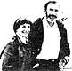

Paul Ehrlich (Bring Professor of Population Studies and Professor of Biological Sciences, Stanford university) and Anne Ehrlich (Senior Research Associate, Department of Biological Sciences, Stanford) are familiar names to ecologists and environmentalists everywhere. As well they should be. Because it was Paul and Anne who - through their writing and research - gave special meaning to the words "population", "resources", and "environment" in the late 1960's. (They also coined the term coevolution, and did a lot to make ecology the household word it is today.) But while most folks are aware of the Ehrlichs' popular writing in the areas of ecology and overpopulation (most of us-for instance-have read Paul's book The Population Bomb) . . . far too few people have any idea of how deeply the Ehrlichs are involved in ecological research (research of the type that tends to be published only in technical journals and college textbooks). That's why it pleases us to be able to present-on a regular basis-the following semi-technical column by authors/ecologists/educators Anne and Paul Ehrlich.
Sometimes the most serious ecological challenges are also among the most subtle . . . and it can be difficult to alert people to the dangers of a problem when there's little visible evidence that a crisis exists. Such is the case with a situation that's currently posing a major threat to humanity's ability to remain in the business of high-yield agriculture.
Last year's record crops in the United States, and the success of the "Green Revolution" in many parts of the world, are thought by some to result solely from the application of modern pesticides and fertilizers. In truth, though, much of that productivity is due to the work of plant geneticists.
Applying Darwinism to crops, these scientists have carefully selected varieties that have characteristics valuable to farmers: high productivity . . . suitability for different climates . . . attractive flavors, textures, and colors . . . useful shapes . . . sensitivity to fertilizers . . . resistance to pests . . . and so on.
The basic resource that permits such artificial selection to be carried out is genetic variability. . . that is, a wide diversity of genes must be available so that plants with many different genetic makeup's (genomes) can be produced by crossbreeding. Geneticists then select, as parents for each generation, the plants that have the most desirable characteristics.
Gradually, through a process of creating arrays of new combinations and winnowing them by selection, the desired result is usually achieved . . . be it a cubical tomato that ships well (although it may be all but flavorless) or a variety of wheat resistant to a given strain of rust (a fungus that is the major enemy of that crop).
The need for genetic diversity becomes especially obvious when one considers the area of pest resistance. Plants have been attacked by insects, fungi, and other enemies for hundreds of millions of years. Quite naturally, many of them have evolved ways to protect themselves against such invasions. The spines found on cacti are an obvious example, but the most common (and potent) defenses are poisonous chemicals within the plants themselves.
Needless to say, the enemies of our crops have, over the years, evolved better and better ways to get around such chemical warfare . . . and the plants, in turn, have found ways of beefing up their defenses. The result has been a series of coevolutionary races, in which attack and defense mechanisms evolve-one after the other-in response to one another (see "Coevolution and Pest Control", MOTHER NO. 50, page 148).
When a wild plant is converted into a crop, humanity takes over some of the responsibility for its protection. In part, this is done with pesticides . . . which, of course, force insects to respond by becoming resistant and human beings to counter with new poisons. The job that the plant once did through evolution is then done for it . . . in the laboratory of an organic chemist.
But pesticides aren't the whole story. In some cases, they can't supply sufficient protection, and pest-resistant strains of crops must be used. In these cases, too, the warfare is ever escalating. For example, in the northwestern United States the "life" of a rust-resistant wheat strain in the field is approximately five years: That's about the time it takes the fungus to evolve a way around the resistance mechanism.
Thus, plant geneticists must have the genetic resources (sometimes called "germ plasm") available to permit them to keep up in their coevolutionary race with pests . . . and to create new and better crops for use in an ever changing world. They've done magnificently so far, but now there's cause for great concern.
Simply put, our two great reservoirs of crop genetic diversity are in danger. One of these is made up of the farms, all over the world, where the specific varieties are grown under widely varying conditions. The second is the great genetic "library" maintained by natural ecosystems, which contains, among other treasures for humanity (see "The Economics of Extinction", MOTHER NO. 69, page 144), the wild relatives of crop plants.
The problem facing the crop reservoir is, ironically, tied in with the success of the plant geneticists. Such men and women have created strains that are so productive-and thus so attractive to farmers-that they're being planted everywhere. As a result, the variety of strains under cultivation has been declining rapidly, and-along with that-the diversity of genes present in a given crop species has been sharply reduced.
In poor countries it was once common for many traditional grain varieties to be grown, but often-in the course of the "Green Revolution"-these have been replaced by one or a few "miracle" strains. United Nations geneticist Reuben Olembo stated the problem dramatically: "When farmers clear a field of primitive grain varieties, they throw away the key to our future."
In rich countries such as the United States, the genetic base of crops has become dangerously narrow. At the time of the last survey, about ten years ago, just a few major varieties accounted for about three-quarters of the acreage planted in each crop.
The vulnerability of American agriculture was spectacularly demonstrated in 1970, when a new strain of fungus overcame the defenses of much of our corn crop and destroyed almost a fifth of it . . . causing a loss of about a billion dollars' worth of corn! Fortunately, there were alternative, more resistant strains still available. They were used for planting the next year, and corn was kept in the coevolutionary race.
Sadly enough, our natural pool of wild genetic resources is in no better shape than is our reservoir of crop varieties. The uncultivated relatives of food plants are being destroyed by human population pressures, the spread of monoculture and urban sprawl, and habitat destruction in general.
Such losses can be put into perspective by considering some of the actual and potential benefits available from wild plants. For example, genes from an uncultivated Turkish strain of wheat gave American varieties resistance to a series of diseases known as "bunts". The value of this single genetic improvement has been estimated at $50 million.
Recently, University of Wisconsin botanist Hugh Iltis was involved in obtaining genes from wild relatives of tomatoes in the Andes and of corn in Mexico. The former, coming from a plant that yields fruit with a high sugar content and delicious flavor, have the potential for adding something on the order of $5 million annually to the profits of the tomato processing industry. And the weedy and unimpressive cousin of domestic corn turns out to be immune to several important corn viruses. If its genes can be used to increase yields by only 1%, the value of the American crop could increase by as much as $200 million a year.
But more important still, this corn relative is a perennial plant. Its genes may therefore provide the basis for developing a perennial corn crop, a grain that farmers could raise without having to plow their fields and sow their seed anew each year. The direct savings in dollars would be enormous, and the resulting decline in soil erosion would help preserve a rapidly dwindling, critical resource: topsoil (see "A Resource Down the River", MOTHER NO. 64, page 136).
Of course, the loss of crop relatives isn't occurring just because of the destruction of natural ecosystems. Many of the wild species from which today's important crops were derived are weedy . . that is, their normal habitats are disturbed areas such as stream banks or landslides. Thus they naturally moved into areas disturbed by early human settlements and probably became domesticated because they were living in such proximity to people. Today, though, some of those relatives persist only in sites protected because of their historical interest. Priceless-and irreplaceable-sources of genes have been lost as, for example, Mediterranean tourist areas have been cleaned of their" weeds".
Overall, the "decay of genetic diversity" threatens, in the long run, to put humanity out of the business of high-yield agriculture . . . and, as a result, it could possibly cause the starvation of billions of people. Fortunately, this is one ecological disaster that almost certainly can be avoided with a relatively small effort and with techniques already in hand. How this can be done will be the subject of our next column.
More details and references on the problems of loss of genetic diversity of crops can be found inEcoscience: Population, Resources, Environment by Paul R. Ehrlich, Anne H. Ehrlich, and John P. Holdren ($23.95 postpaid from W.H. Freeman and Company, Dept. TMEN, 660 Market Street, San Francisco, California 94104,). General information on the potential benefits from the "genetic library" can be found in Paul and Anne Ehrlich's Extinction: The Causes and Consequences of the Disappearance of Species (Random House, New York, 1981, $15.95).
 Additional information on the loss of genetic diversity-and on a program that you can join to help remedy this problem-ca be found in the Plowboy Interview in MOTHER NO. 73. Turn to page 68 to order back issues.
|
 |
|
|